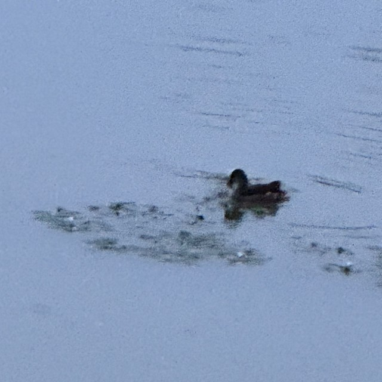

Guanqi Wang 「王冠淇」

| Email | Github |
I am currently an undergraduate majoring in Automation at Hohai University.
I am now conducting research training in the Advanced Navigation and Intelligence Perception Group, School of Artificial Intelligence and Automation, under the supervision of Fengyu Liu.
Research Interest: GNSS-denied navigation; robot perception.
Email: guanqiwang2006 [AT] gmail.com
Website template from Tairan He, Jon Barron and Deepak Pathak